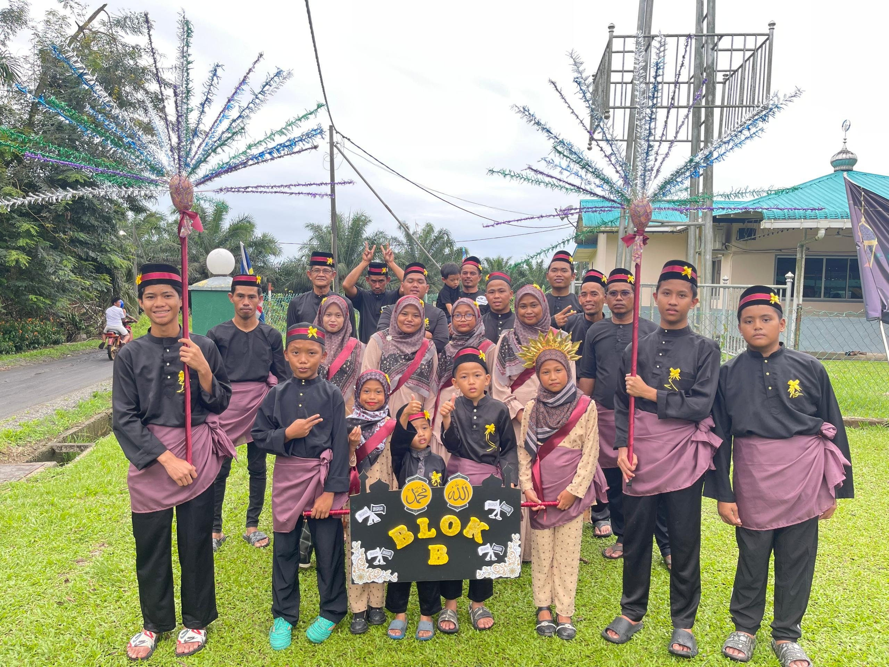

30/04/2025
I had appendicitis due to eating spicy food, which led to severe stomach pain and diarrhea. After hospital
examination, I underwent surgery and now manage my diet more carefully.
04/10/2024
My first time being far from family as I entered UNIMAP. Although they wanted me to stay in Sabah, I accepted
this opportunity to grow and gain knowledge.
04/10/2024
I handled the registration at UNIMAP on my own. It was an emotional experience, but I found joy in new
friendships and independence.
12/02/2024
My first time holding a batik rice field snake. It felt slimy and cold, but the experience was thrilling and
unforgettable.
04/11/2024
A memorable win in a Mobile Legends state-level competition with friends during Form 6. One of the happiest
moments.

21/09/2024
A beautiful memory from the "cleanest house" competition held during Maulidur Rasul. A moment of teamwork and
creativity.